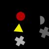
(1)
Less than all the two crosses but one are gray.
At least all the seven gray shapes but three are gray crosses.
At least two thirds of the crosses are gray.
Exactly all gray shapes but two are crosses.
At most five of the two crosses are gray.
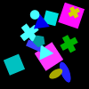
(2)
At least five blue shapes are blue triangles.
Exactly one rectangle is gray.
Less than three of the three yellow shapes are triangles.
Less than all the six triangles but zero are blue.
Not zero pentagons are cyan pentagons.
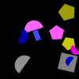
(3)
At most no square is gray.
At least all pentagons are yellow pentagons.
Less than all the five pentagons but two are magenta.
Not all the five semicircles but two are blue.
Less than two yellow shapes are pentagons.
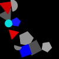
(4)
Exactly a third of the six gray shapes is a semicircle.
Exactly none of the six gray shapes is a pentagon.
As many triangles as squares are gray.
At most two of the two blue shapes are squares.
More than no semicircle is red.
(5)
Five more triangles than crosses are cyan.
At least no triangle is cyan.
Half as many crosses as semicircles are cyan.
At most half the two blue shapes are triangles.
Not zero of the three semicircles are blue.
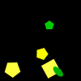
(6)
More than all ellipses but one are red ellipses.
Not two of the five squares are magenta squares.
Less than all cyan shapes are squares.
Less than half the squares are cyan.
As many squares as circles are green.
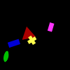
(7)
At most three of the three pentagons are cyan pentagons.
More than all the two gray shapes but one are gray pentagons.
At least half the cyan shapes are pentagons.
Less than one of the two gray shapes is a gray rectangle.
At most zero pentagons are cyan.
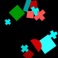
(8)
Two more red shapes than cyan shapes are squares.
At most half the cyan shapes are cyan crosses.
More than five cyan shapes are crosses.
More than zero cyan shapes are pentagons.
At most four rectangles are cyan.
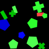
(9)
Not five shapes are yellow.
At least a quarter of the triangles is green.
Not none of the two blue shapes is a rectangle.
Not all the two crosses are yellow.
At least a quarter of the green shapes is a green semicircle.
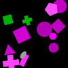
(10)
Not all the six green shapes are rectangles.
More than a third of the green shapes is a semicircle.
Not all green shapes but three are rectangles.
Not all green shapes are rectangles.
More than five ellipses are blue.
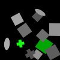
(11)
More than five of the eight squares are cyan.
Not three quarters of the five green shapes are crosses.
At least zero green shapes are crosses.
More than a quarter of the ellipses is gray.
Exactly half the three green shapes are green crosses.
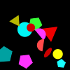
(12)
More than five of the seven blue shapes are blue triangles.
At most three of the two red shapes are rectangles.
At least five ellipses are gray.
Not two thirds of the seven blue shapes are rectangles.
Five more blue shapes than red shapes are rectangles.
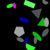
(13)
Half as many ellipses as semicircles are gray.
Exactly a quarter of the magenta shapes is a pentagon.
Three more pentagons than triangles are gray.
Less than five green shapes are green triangles.
Exactly one blue shape is a rectangle.
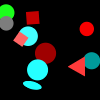
(14)
As many circles as crosses are red.
Not none of the seven circles is gray.
At least a third of the three cyan shapes is a circle.
At least a third of the gray shapes is a square.
At most five circles are red circles.
(15)
Two more gray shapes than cyan shapes are ellipses.
At most five gray shapes are circles.
At least a third of the ellipses is magenta.
At least a third of the three circles is gray.
At most a third of the three circles is a gray circle.
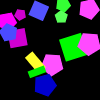
(16)
Not five yellow shapes are rectangles.
At most all blue shapes but two are pentagons.
Exactly a quarter of the magenta shapes is a pentagon.
Less than five of the five green shapes are rectangles.
At least all green shapes but three are ellipses.
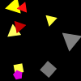
(17)
Not no triangle is magenta.
At most four of the six triangles are yellow.
At least a third of the three yellow shapes is a triangle.
Not four triangles are yellow triangles.
More than two thirds of the four blue shapes are triangles.
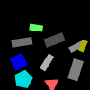
(18)
Four more gray shapes than yellow shapes are triangles.
At most two of the seven rectangles are gray.
Not all rectangles but two are green.
At least three quarters of the green shapes are triangles.
More than five of the seven rectangles are gray.
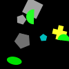
(19)
At least all gray shapes but two are ellipses.
Half as many pentagons as semicircles are green.
Less than half the three cyan shapes are ellipses.
Less than all squares but zero are gray.
At least all ellipses but zero are green.
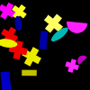
(20)
Three more rectangles than semicircles are gray.
More than all the six gray shapes but three are pentagons.
At least all green shapes but zero are green pentagons.
At least two semicircles are gray.
Exactly three quarters of the six gray shapes are rectangles.
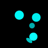
(21)
Exactly all the four circles but zero are green.
At most two thirds of the five green shapes are ellipses.
At least four of the five shapes are cyan ellipses.
Less than two thirds of the circles are cyan.
At most a quarter of the cyan shapes is a circle.
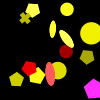
(22)
Exactly three quarters of the squares are gray.
Exactly all the four pentagons but two are yellow pentagons.
More than three shapes are yellow.
At least half the eight squares are yellow.
At least five yellow shapes are squares.
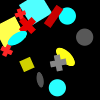
(23)
At most all the four gray shapes but zero are gray ellipses.
Exactly zero pentagons are gray.
At most two of the eight circles are gray.
As many gray shapes as blue shapes are ellipses.
More than a quarter of the seven blue shapes is an ellipse.
(24)
More than two blue shapes are pentagons.
Less than three quarters of the two red shapes are squares.
Exactly one red shape is a pentagon.
Less than a third of the two red shapes is a pentagon.
At most zero of the eight circles are gray.
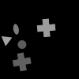
(25)
Less than all triangles but zero are cyan triangles.
At least a third of the three green shapes is a cross.
At least a third of the five shapes is a cross.
At least half the two crosses are magenta.
At least a third of the crosses is cyan.
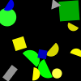
(26)
At most all the two circles but one are yellow.
More than a quarter of the squares is blue.
At most a quarter of the six yellow shapes is a circle.
At least zero yellow shapes are squares.
Exactly half the four green shapes are green semicircles.
(27)
At least five of the eight shapes are cyan.
At least two of the eight pentagons are red.
Two more cyan shapes than red shapes are pentagons.
Not all the eight pentagons but zero are cyan.
More than a third of the cyan shapes is a pentagon.
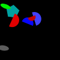
(28)
More than three of the seven green shapes are crosses.
At most five green shapes are crosses.
Less than all blue shapes are crosses.
At least three green shapes are rectangles.
At most all the seven green shapes are crosses.
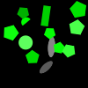
(29)
More than five of the five pentagons are green.
Less than one of the eight pentagons is green.
As many rectangles as circles are green.
At most three shapes are ellipses.
More than three quarters of the pentagons are red.
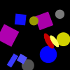
(30)
Exactly two of the five circles are gray.
More than two thirds of the yellow shapes are circles.
Exactly five squares are magenta.
At least half the gray shapes are circles.
At least all gray shapes but one are circles.
(31)
Exactly two thirds of the three circles are cyan.
More than two thirds of the blue shapes are crosses.
Not two thirds of the cyan shapes are pentagons.
Exactly three of the five cyan shapes are cyan circles.
More than all the two pentagons but one are cyan.
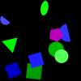
(32)
Not all the five shapes but three are red crosses.
At least all rectangles but three are yellow.
Exactly all the three rectangles but two are blue.
More than three of the five shapes are circles.
Not all the four shapes but zero are yellow.
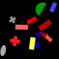
(33)
At least two of the seven rectangles are red.
Exactly three crosses are green.
Not one of the three blue shapes is a rectangle.
At most four of the three crosses are red crosses.
At least all rectangles but zero are red rectangles.
(34)
Two more pentagons than rectangles are gray.
Not five of the six pentagons are gray.
Not two thirds of the gray shapes are ellipses.
More than two thirds of the triangles are yellow.
Less than all pentagons but two are gray.
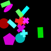
(35)
At most no green shape is a square.
Not three triangles are green triangles.
Not no ellipse is green.
More than two of the four green shapes are triangles.
Not all the two gray shapes are triangles.
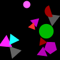
(36)
Four more squares than crosses are red.
Half as many rectangles as pentagons are red.
At least two thirds of the two blue shapes are pentagons.
More than one of the four crosses is a red cross.
Exactly zero of the three crosses are magenta.
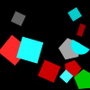
(37)
Less than a third of the rectangles is red.
Exactly zero of the seven circles are green.
Not all yellow shapes but one are circles.
More than three circles are blue.
At least five rectangles are green.
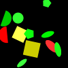
(38)
Two more red shapes than green shapes are ellipses.
Less than a quarter of the ellipses is red.
More than five pentagons are gray.
At most all the four pentagons but two are gray.
More than all shapes but two are green ellipses.
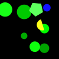
(39)
At least five shapes are ellipses.
Exactly one shape is a square.
More than all the four red shapes but three are rectangles.
Less than two of the six triangles are blue triangles.
At most none of the three triangles is a green triangle.

(40)
Half as many semicircles as circles are gray.
At most half the three pentagons are gray pentagons.
At most three quarters of the six gray shapes are rectangles.
Not all gray shapes but three are gray rectangles.
Not two thirds of the circles are gray.
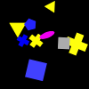
(41)
Exactly four of the six green shapes are squares.
More than all squares but one are green squares.
At least half the eight ellipses are green.
More than five gray shapes are ellipses.
Not all the six green shapes are squares.
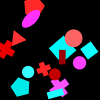
(42)
Twice as many circles as pentagons are red.
More than all the two pentagons but one are red.
At least a third of the circles is a red circle.
Exactly all magenta shapes are circles.
As many triangles as pentagons are cyan.
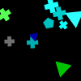
(43)
At most a third of the four rectangles is blue.
Less than one of the two cyan shapes is an ellipse.
More than all shapes but two are ellipses.
Not none of the three rectangles is green.
Not all the two cyan shapes are ellipses.
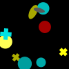
(44)
At least all red shapes but zero are red pentagons.
Not all the six pentagons are red pentagons.
Not four of the four red shapes are pentagons.
At least all semicircles are yellow.
At most two thirds of the pentagons are yellow pentagons.
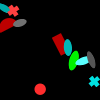
(45)
At least five shapes are red pentagons.
At least two red shapes are pentagons.
At most three of the two crosses are cyan.
At most three quarters of the pentagons are red.
At least four of the two crosses are cyan.
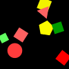
(46)
More than zero squares are green squares.
At least a quarter of the four red shapes is a square.
At least all the two yellow shapes but zero are squares.
At most a quarter of the red shapes is a square.
Not all green shapes but two are squares.
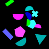
(47)
Not no green shape is a rectangle.
At least all the five cyan shapes but three are pentagons.
At least two thirds of the triangles are cyan.
As many crosses as rectangles are blue.
Half as many green shapes as cyan shapes are semicircles.
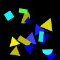
(48)
Exactly five of the three triangles are red triangles.
Not all triangles but three are magenta.
At most three of the three crosses are cyan.
At least a third of the red shapes is a triangle.
Exactly three squares are red.
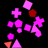
(49)
Two less crosses than pentagons are magenta.
Not a quarter of the two triangles is red.
Less than all the three squares are magenta.
At least all the three squares but three are magenta.
More than half the six pentagons are magenta.

(50)
At least all the six shapes but three are magenta.
Less than one ellipse is blue.
Less than two of the three circles are blue circles.
Twice as many blue shapes as magenta shapes are circles.
Not two of the six shapes are magenta.

(51)
Half as many cyan shapes as yellow shapes are ellipses.
More than three of the six rectangles are yellow.
Two less green shapes than yellow shapes are ellipses.
Exactly zero ellipses are green.
Less than one of the six green shapes is a square.
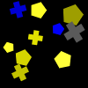
(52)
At most two red shapes are circles.
More than one triangle is green.
At least a third of the circles is a red circle.
Not all the three green shapes but one are ellipses.
At most all the two green shapes but two are ellipses.
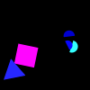
(53)
Not three quarters of the three semicircles are blue.
Twice as many blue shapes as cyan shapes are semicircles.
Less than two semicircles are cyan.
Not a third of the three blue shapes is a semicircle.
More than all magenta shapes but one are triangles.
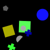
(54)
More than four crosses are green.
Not three of the two green shapes are crosses.
Not no green shape is a circle.
Less than three quarters of the two squares are green.
Not half the three gray shapes are pentagons.
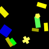
(55)
At most a quarter of the yellow shapes is a cross.
Not four pentagons are yellow.
Exactly zero green shapes are pentagons.
Less than all shapes are yellow.
Less than two thirds of the green shapes are rectangles.
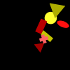
(56)
Exactly none of the three circles is cyan.
Not no shape is magenta.
Not all green shapes but two are circles.
At most three quarters of the shapes are circles.
At least two green shapes are green triangles.
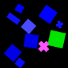
(57)
Less than three quarters of the seven shapes are crosses.
At most two thirds of the red shapes are crosses.
More than four shapes are cyan.
Less than three semicircles are red.
Not all crosses are yellow.
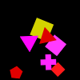
(58)
Less than half the red shapes are red pentagons.
Less than two thirds of the four magenta shapes are magenta squares.
Not zero squares are gray.
At most four red shapes are triangles.
Less than half the red shapes are squares.
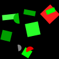
(59)
More than no blue shape is a square.
Not a quarter of the three triangles is blue.
At most none of the five cyan shapes is a triangle.
At least two blue shapes are semicircles.
At least four semicircles are green.
(60)
At most one of the two squares is cyan.
Exactly no gray shape is a gray square.
Exactly all the four cyan shapes are rectangles.
Not all shapes but two are cyan triangles.
At least all cyan shapes but three are cyan semicircles.
(61)
At least a third of the three magenta shapes is a square.
Half as many triangles as ellipses are magenta.
More than two thirds of the crosses are red.
At least all red shapes but one are circles.
Not no shape is blue.
(62)
At least five red shapes are red crosses.
More than zero of the two circles are red.
Less than three quarters of the red shapes are pentagons.
Not a quarter of the red shapes is a circle.
Exactly one of the two pentagons is cyan.
(63)
Exactly a quarter of the three green shapes is a circle.
At most none of the three green shapes is a triangle.
Exactly three rectangles are green.
Less than five gray shapes are gray pentagons.
At least all the three circles but one are blue.
(64)
Two less cyan shapes than magenta shapes are circles.
Four more blue shapes than cyan shapes are circles.
More than one of the seven circles is magenta.
At least all the seven circles but one are cyan.
More than five shapes are magenta.
(65)
Not three quarters of the magenta shapes are crosses.
Exactly no shape is a magenta semicircle.
At most five of the six semicircles are blue.
Less than four of the five magenta shapes are semicircles.
As many squares as triangles are magenta.
(66)
At least a quarter of the yellow shapes is a triangle.
Exactly no triangle is gray.
Not three of the five yellow shapes are triangles.
At most one shape is a cyan triangle.
Less than two thirds of the five yellow shapes are squares.
(67)
Four more yellow shapes than gray shapes are triangles.
More than no triangle is yellow.
Less than three of the six yellow shapes are triangles.
At most half the triangles are yellow.
Exactly one semicircle is cyan.
(68)
Four more red shapes than blue shapes are squares.
Exactly no red shape is a red pentagon.
Less than two circles are red.
More than half the eight green shapes are squares.
Half as many green shapes as red shapes are circles.
(69)
At least two thirds of the gray shapes are semicircles.
At most no shape is a cyan circle.
Less than half the semicircles are magenta.
Less than a quarter of the magenta shapes is a pentagon.
At most three of the eight cyan shapes are semicircles.
(70)
At most all the two gray shapes but zero are crosses.
More than a third of the four cyan shapes is a cyan circle.
At least two of the six cyan shapes are circles.
Less than three quarters of the eight circles are blue.
Not four crosses are green.
(71)
At most three quarters of the circles are red.
Not zero of the two squares are magenta.
More than a quarter of the shapes is magenta.
At least all pentagons are gray.
At most no gray shape is a cross.
(72)
Not all blue shapes are blue crosses.
At most all the two semicircles are magenta.
At most all semicircles are cyan.
Not three quarters of the semicircles are blue.
Less than two shapes are magenta.
(73)
Not five red shapes are circles.
Not half the five red shapes are triangles.
Three more triangles than ellipses are red.
Not a third of the two circles is red.
Less than all red shapes but three are triangles.
(74)
Less than two thirds of the six crosses are red crosses.
Not zero of the five red shapes are crosses.
Less than half the five red shapes are semicircles.
Exactly a quarter of the five red shapes is a semicircle.
At most zero semicircles are magenta.
(75)
At least five shapes are yellow.
At least a quarter of the three green shapes is an ellipse.
Exactly four green shapes are semicircles.
At most two thirds of the green shapes are triangles.
At most all the seven green shapes but two are green semicircles.
(76)
At most zero cyan shapes are circles.
Half as many rectangles as pentagons are cyan.
At least three quarters of the squares are blue.
Less than half the four semicircles are yellow semicircles.
Not two pentagons are cyan.
(77)
Less than two thirds of the five yellow shapes are rectangles.
Exactly all cyan shapes but two are ellipses.
More than two of the five yellow shapes are crosses.
More than zero of the seven shapes are cyan rectangles.
At least three quarters of the five yellow shapes are yellow crosses.
(78)
Not a quarter of the two magenta shapes is an ellipse.
At least two magenta shapes are crosses.
At most a third of the circles is red.
Not zero green shapes are ellipses.
At most two shapes are magenta.
(79)
Exactly zero shapes are blue squares.
At most half the three blue shapes are squares.
Less than all the four semicircles but zero are green.
More than zero green shapes are green rectangles.
Less than three quarters of the four semicircles are magenta.
(80)
At least one of the three pentagons is blue.
At least all the five gray shapes but three are squares.
At least no cross is red.
At least half the ellipses are gray ellipses.
Exactly three quarters of the two red shapes are crosses.
(81)
More than half the crosses are magenta.
Not four circles are red.
Not no pentagon is red.
Exactly two of the two cyan shapes are pentagons.
Less than three quarters of the five pentagons are magenta pentagons.
(82)
At most a quarter of the four magenta shapes is a pentagon.
Exactly a third of the six circles is yellow.
Less than all magenta shapes but one are circles.
More than no triangle is green.
At most all the six circles but three are magenta.
(83)
At most three of the six shapes are squares.
At most one shape is cyan.
At most all shapes but three are ellipses.
Exactly all the six shapes are yellow.
Not four shapes are green.
(84)
Two more pentagons than triangles are red.
Exactly zero of the five shapes are yellow pentagons.
At least half the shapes are yellow.
Not all the four magenta shapes but one are triangles.
Not one of the four yellow shapes is a pentagon.
(85)
Less than all the eight triangles but three are magenta.
As many pentagons as triangles are red.
At least all crosses are gray.
More than a quarter of the blue shapes is a rectangle.
More than five shapes are magenta.
(86)
At most one cross is magenta.
Not all crosses but three are gray.
At least all rectangles but two are cyan.
At least two gray shapes are crosses.
Not one cross is magenta.
(87)
More than two thirds of the three triangles are yellow.
At most one of the three triangles is cyan.
At least half the squares are cyan.
More than one of the three triangles is cyan.
Exactly zero cyan shapes are triangles.
(88)
At least all circles but three are gray.
Less than five squares are gray.
At most three quarters of the two blue shapes are circles.
At least a quarter of the squares is gray.
Exactly all semicircles but zero are green.
(89)
At least three quarters of the rectangles are magenta.
At most three quarters of the three magenta shapes are squares.
Exactly one square is a green square.
Less than two thirds of the pentagons are magenta.
As many squares as rectangles are magenta.
(90)
At least zero of the six ellipses are yellow.
More than five triangles are yellow.
More than no shape is a triangle.
At least all shapes but one are triangles.
At least three of the four yellow shapes are ellipses.
(91)
Not a quarter of the cyan shapes is a rectangle.
Half as many rectangles as semicircles are cyan.
At most half the eight shapes are red.
Not all the four cyan shapes but two are semicircles.
Not three quarters of the three semicircles are cyan.

(92)
More than all magenta shapes but two are pentagons.
Exactly all red shapes but zero are pentagons.
As many triangles as ellipses are red.
Not all red shapes but zero are pentagons.
Exactly three quarters of the red shapes are triangles.
(93)
Exactly two thirds of the pentagons are yellow pentagons.
Not all semicircles but one are blue.
Not three quarters of the three pentagons are yellow.
More than all pentagons but two are blue.
Exactly no shape is a yellow semicircle.
(94)
At most none of the four red shapes is a rectangle.
More than two thirds of the four red shapes are triangles.
More than four of the four red shapes are red rectangles.
Not two thirds of the rectangles are green.
More than a quarter of the two triangles is a red triangle.
(95)
Three more semicircles than squares are green.
At most a quarter of the green shapes is a square.
At most zero of the six green shapes are green pentagons.
More than two of the four semicircles are green.
More than one semicircle is green.
(96)
At most a quarter of the four pentagons is gray.
Not no magenta shape is a square.
At least all magenta shapes but one are crosses.
Exactly all the three red shapes but zero are red rectangles.
Exactly one of the three magenta shapes is a pentagon.
(97)
At least four of the two crosses are red crosses.
Not three of the four pentagons are red.
Less than all the two cyan shapes are cyan squares.
Less than one cyan shape is a cyan square.
Exactly a third of the three pentagons is blue.
(98)
More than two cyan shapes are cyan triangles.
Two less yellow shapes than cyan shapes are triangles.
Not a quarter of the triangles is yellow.
Not a quarter of the cyan shapes is an ellipse.
Not two thirds of the four triangles are cyan.
(99)
Exactly zero shapes are magenta triangles.
Not all magenta shapes but three are squares.
Two more magenta shapes than cyan shapes are triangles.
Not a quarter of the triangles is cyan.
At least none of the four magenta shapes is a triangle.
(100)
At least three quarters of the rectangles are red.
At least three of the three green shapes are semicircles.
Not all the seven shapes but two are green.
Half as many blue shapes as green shapes are semicircles.
Half as many yellow shapes as green shapes are semicircles.